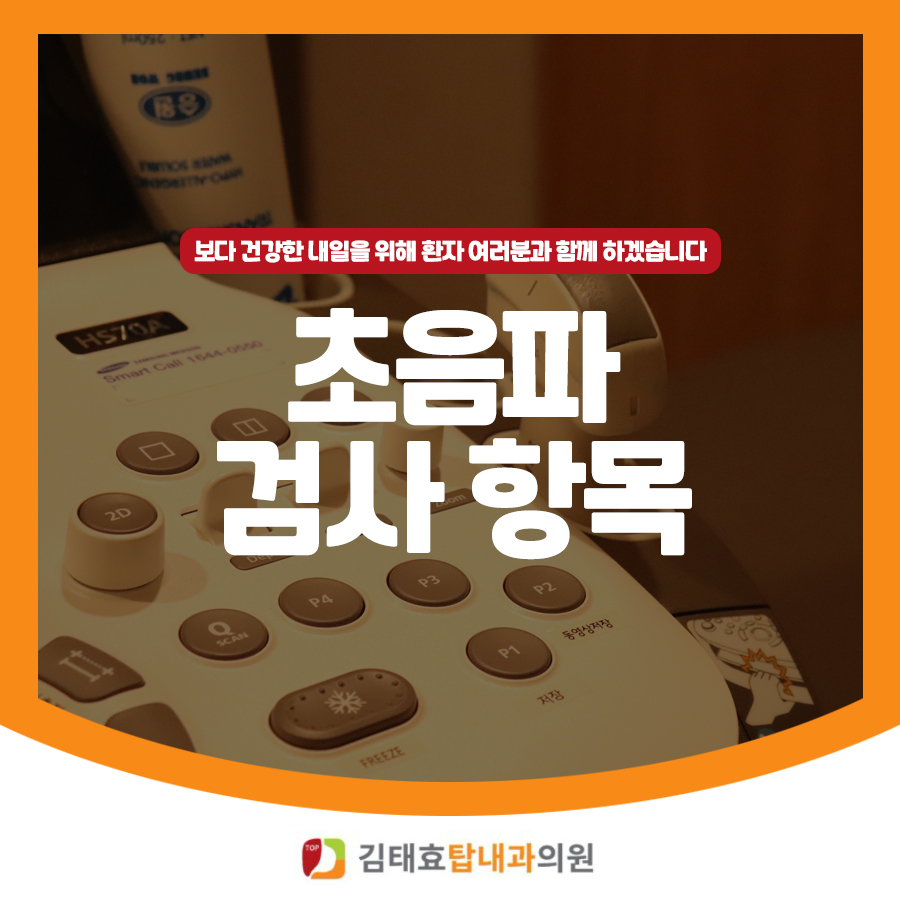
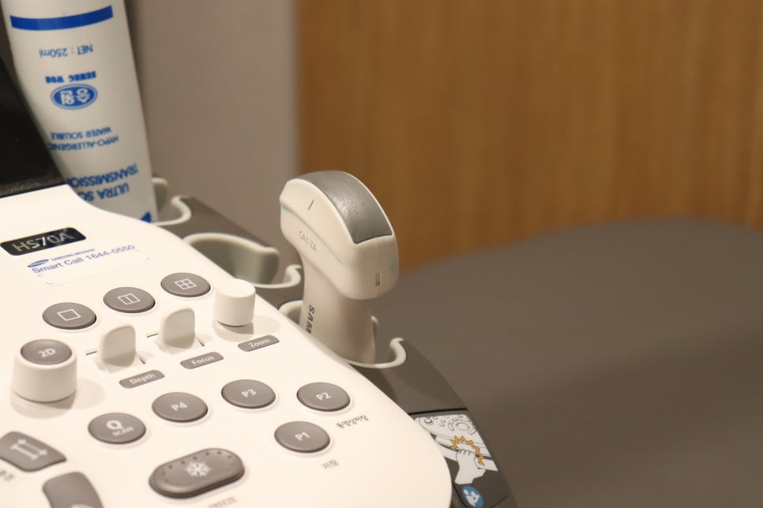
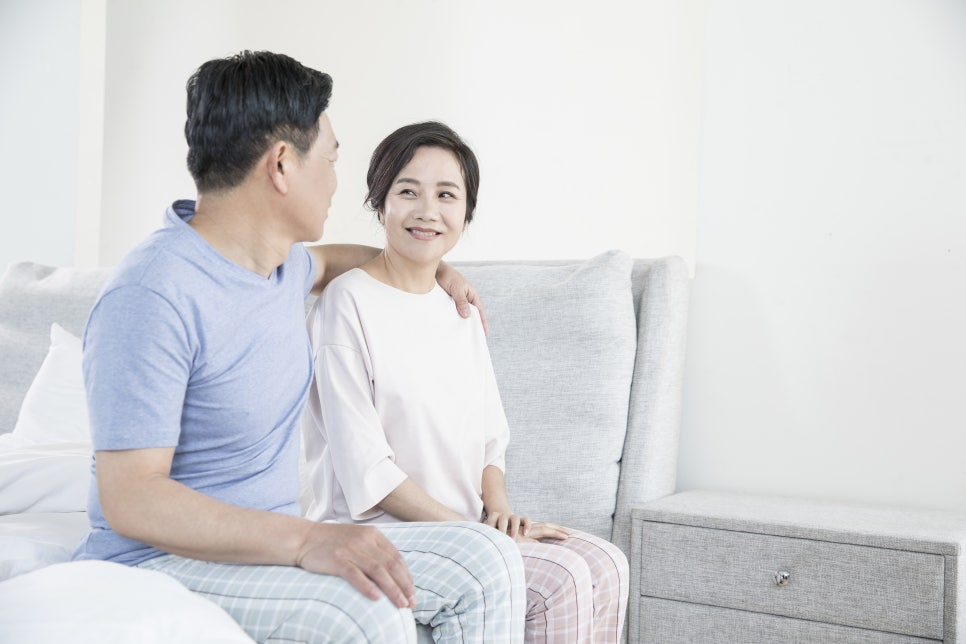
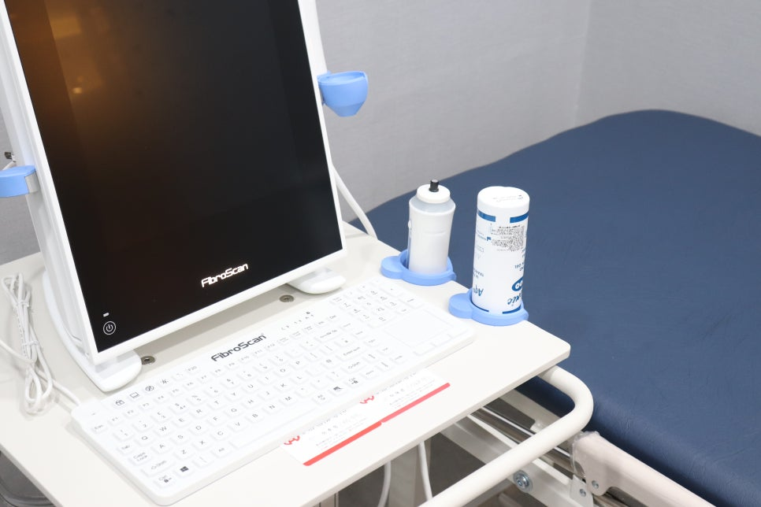

평거동내과 김태효탑내과의원에서는 초음파클리닉을 운영하며, 고가의 장비를 이용해 환자분들의 건강을 살피고 있습니다. 상/하복부, 경동맥, 심장, 갑상선 부분에 대한 검사를 진행할 수 있습니다. 자세한 내용을 지금부터 확인해 보세요.


초음파를 만드는 탐촉자를 복부에 대고 초음파를 보낸 다음 되돌아오는 초음파를 실시간으로 영상화하는 검사로, 복부 증상이 있을 때 가장 널리 이용됩니다. 상복부 검사와 하복부(골반) 검사로 나뉘며, 간편하고 편안하게 누워서 검사받으실 수 있습니다.
경동맥 초음파는 뇌졸중의 조기 진단과 예방, 뇌동맥 경화증의 정도를 알아보는 검사법입니다. 뇌의 혈액순환 상태나 뇌혈관 내부 상태를 초음파 원리로 검사하기 때문에 환자에게 고통을 주지 않고 진단할 수 있으며, 대뇌 질환의 급성 변화 판단에 유용하고 조영제 사용이 필요하지 않습니다.
심장 초음파는 주로 심장판막증, 심근증, 협심증, 심근경색, 대동맥류, 심막염, 선천성 심장병 등을 진단합니다. m모드와 b모드 2종류가 있으며, m모드에서는 파상의 영상이, b모드에서는 심장의 단층도와 혈액의 흐름이 색으로 표시됩니다.
갑상선의 모양과 크기를 알 수 있는 검사로, 갑상선에 혹이 만져지는 경우 혹의 모양과 크기, 범위와 종양 여부를 알아볼 수 있는 우수한 진단 도구입니다.
높은 해상도로 갑상선 결절을 발견하고 평가하는 데 우수한 방법이지만, 악성암 모양의 양성조직 또는 양성 모양의 악성조직은 초음파로 구분하기 어려워 암이 의심되는 경우에는 세포흡입생검을 추가로 받아보셔야 합니다.

풍부한 경험의 의료진이 우수한 의료장비를 이용해 환자들의 건강을 돌보는 평거동내과 김태효탑내과의원입니다. 초음파 검사는 비교적 편안하고 안전하게 받으실 수 있으며, 초음파실에서 대부분 편안하게 누워서 진행되지만 안내에 따라 몸을 돌려 눕거나 호흡 등 협조가 필요하기도 합니다. 어려운 부분은 없으며 검사 진행 시 친절하게 안내해 드리니, 해당 검사가 필요한 분들은 진주 김태효탑내과의원을 찾아주세요.
